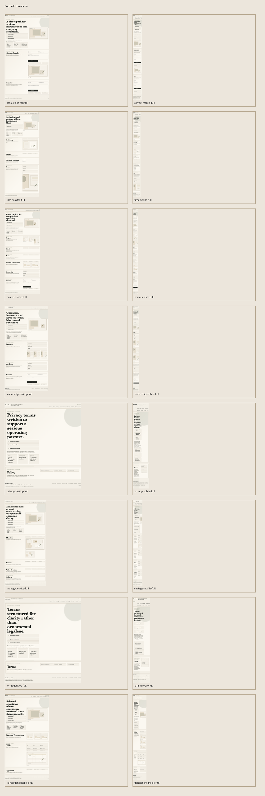
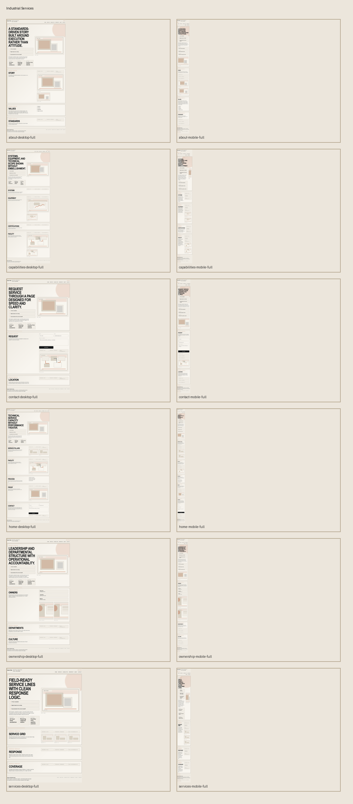
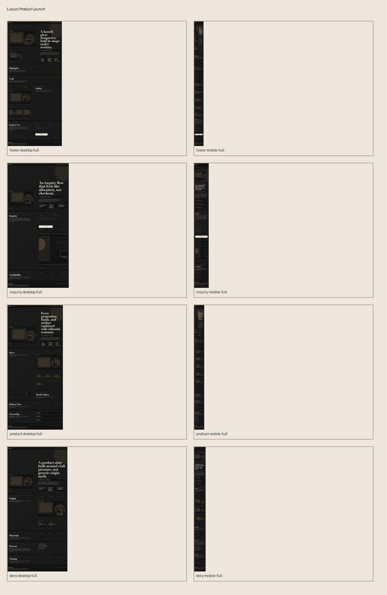
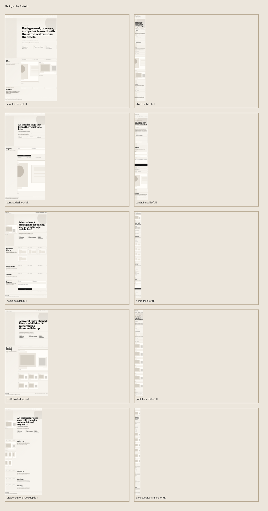
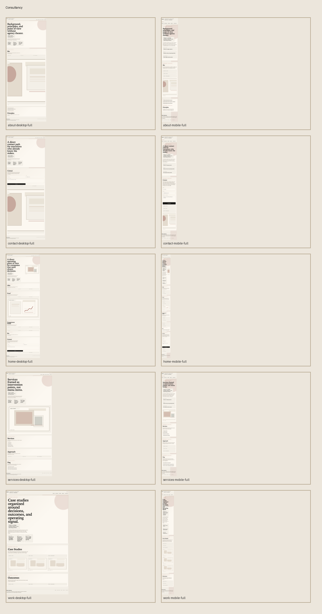
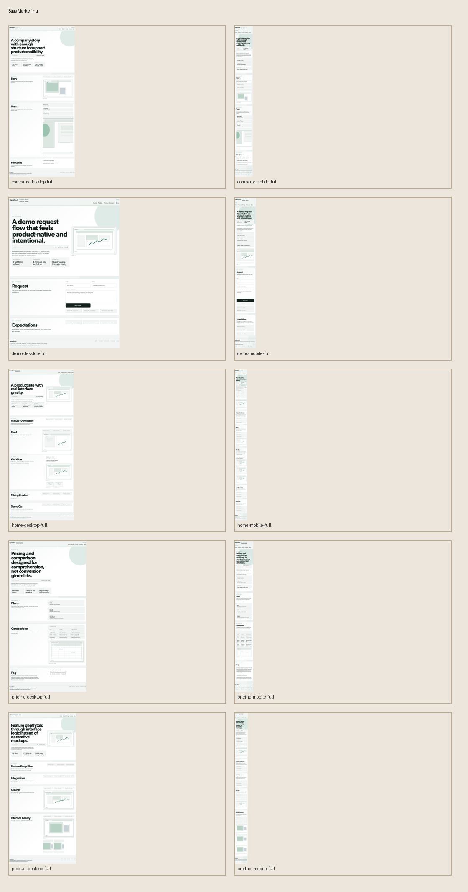
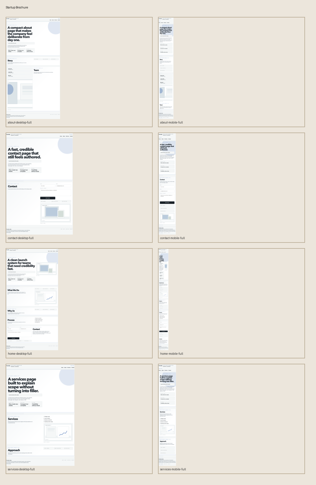
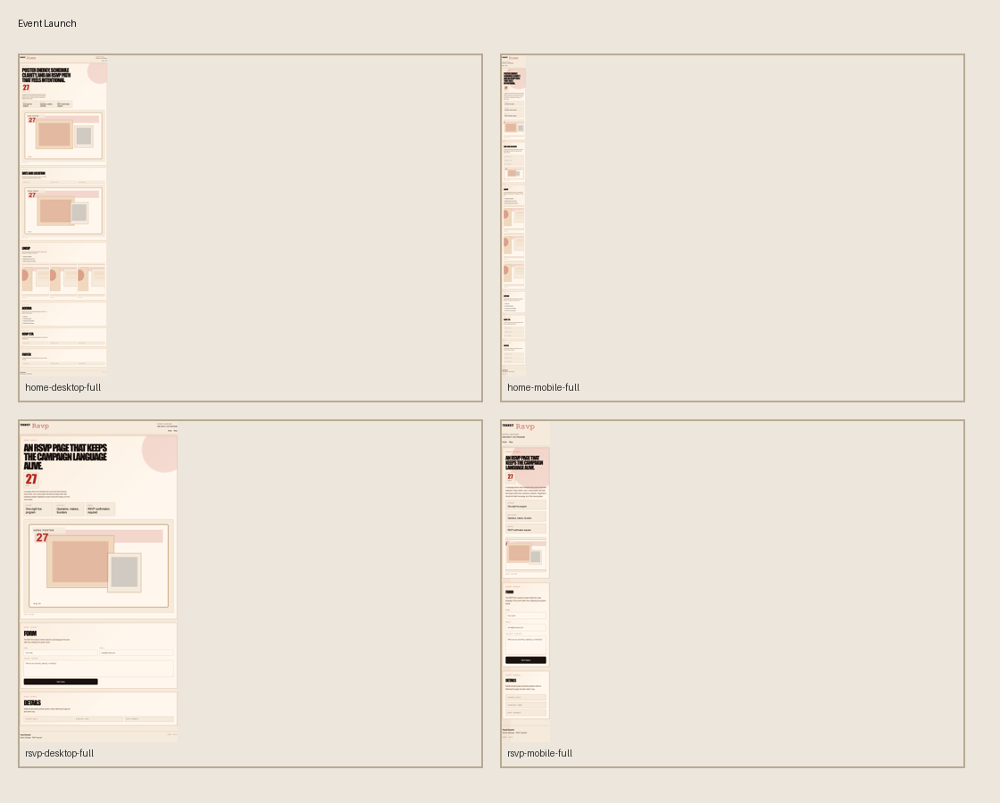
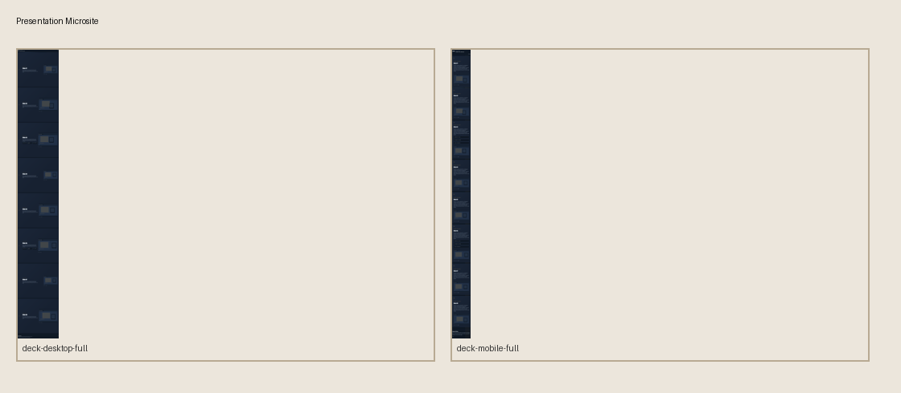
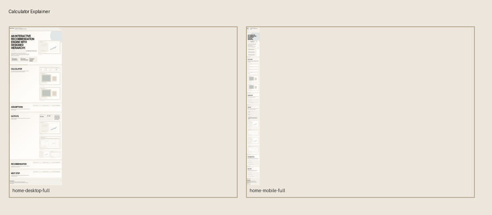

Corporate Investment
Northline Capital
Institutional finance brochure with a calm editorial shell, transactions pages, and leadership interiors.
Websites / Template Library
This repo now publishes as a single GitHub Pages site. The homepage acts as a directory, and each card below opens a fully built template in its own subfolder.
Each template links to its live pages, screenshot board, and criteria summary.
Published Structure
The cards are intentionally direct: preview first, then open the template, then inspect the review evidence. This keeps the repo readable as both a client-facing gallery and an internal deployment surface.

Corporate Investment
Institutional finance brochure with a calm editorial shell, transactions pages, and leadership interiors.

Industrial Services
Operational services site with technical interiors, dispatch-style sections, and facility-grade page structure.

Luxury Product Launch
Collector-oriented launch system with dark editorial pacing, product storytelling, and inquiry-led conversion.

Photography Portfolio
Portfolio system built around sequence, restraint, and project-led navigation rather than thumbnail dumping.

Consultancy
Argument-led consulting site for short, serious engagements with work pages, service pages, and direct contact.

SaaS Marketing
Product-forward B2B software site with feature pages, pricing, company context, and demo request flow.

Startup Brochure
Compact company launch site with just enough structure and differentiation to ship fast without looking generic.

Event Launch
Campaign-led event microsite with poster energy, bold date treatment, and RSVP page continuity.

Presentation Microsite
Slide-based browser deck with keyboard navigation, alternating tonal frames, and full-page narrative sequencing.

Calculator Explainer
Interactive pricing and recommendation page where hierarchy, input grouping, and output framing do the work.
Deployment Notes
Publish `templates/` as the repository root for Pages, and this landing page will expose every sub-template under the same domain path. That gives you one portfolio surface and keeps every starter site directly accessible.